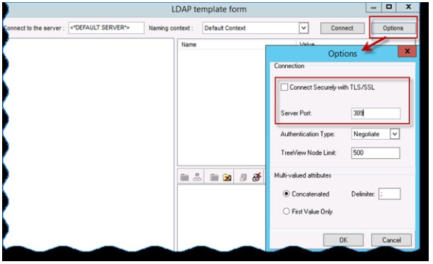
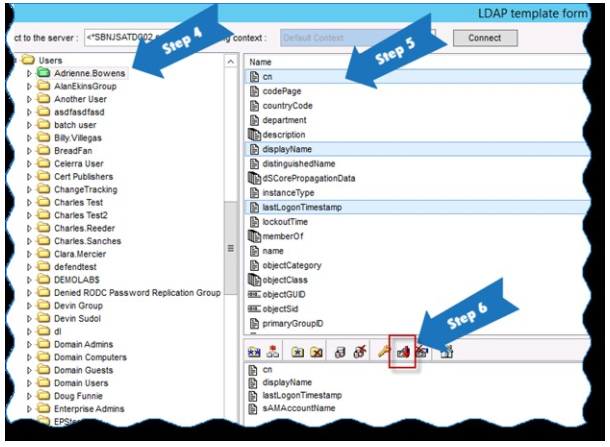
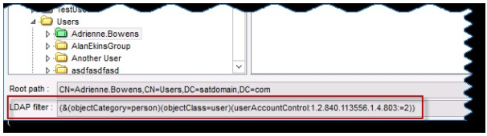
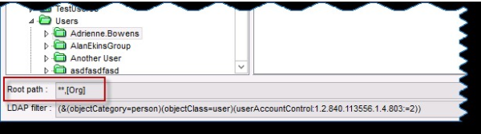

Summary: This article describes how to use the LDAP Data Collector to generate a listing of disabled user accounts from targeted domains
Issue: The LDAP data collector can be used to quickly search for and return a list of objects
Instructions: Instructions for building a query to return a current listing of disabled user objects from the target domain:
- Create a query selecting the LDAP data collector
- Click 'Option' button in the upper right-hand corner of the query configuration dialogue to select the connection type and associated port
- For non TLS/SSL connections, ensure the 'Connect Securely..' check box is unchecked and the Server Port value is set to 389
- For TLS/SSL connections, ensure the 'Connect Securely..' option is checked and the port value is set to 636

- In the "Connect to the server" text entry box, enter the name of a domain controller or leave the default value to connect to a local domain controller in the domain where the StealthAUDIT console resides
- To build a query to return information on user objects, navigate through the directory structure and select a user to use for query construction
- With the user selected in the left-hand explorer pane, hold control down and select individual user attributes to extract during the course of query execution from the upper right-hand pane; e.g., CN, DisplayName, DistinguishedName, SamAccountName, LastLogonTimeStamp
- With the desired attributes selected, click the red down arrow icon in the center tool bar to add the attributes to the query
*Properties added to the query will display under the toolbar in the lower pane

- To list only user accounts that are disabled, we need to add a filter to restrict results to only user objects where bit 2 in the UserAccountControl attribute has been enabled. To do this, we copy/paste the filter expression "(&(objectCategory=person)(objectClass=user)(userAccountControl:1.2.840.113556.1.4.803:=2))" into the LDAP filter dialogue

8. Replace the root path value pointing to the sample user account with the wild card expression "**,[Org]". The wildcard instructs the query to search recursively through the entire targeted domain for user objects matching the query filter

9. Click ok to save the query configuration. Click OK once again to finalize query configuration
- From the hosts node, target a domain controller for the targeted domain and execute the job
- When the job completes, review the results in the source data table. Disabled user objects in the targeted domain will be listed
Product: StealthAUDIT
Module: SA - DC - LDAP
Versions: V6.x, V7.x
Legacy Article ID: 1428